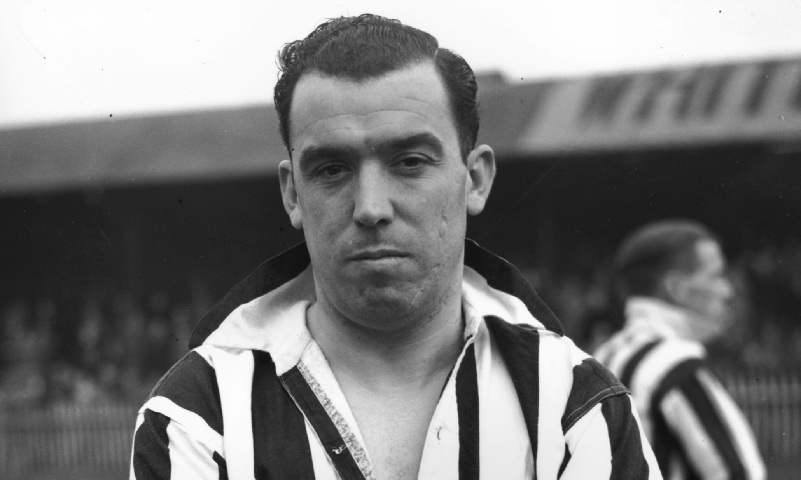

Dean is best known for scoring 60 goals in a season with Everton. His father took him to a league game at Goodison Park when he was eight years old. It was a dream come true for Dean when Everton secretary Thomas H. McIntosh arranged to meet him at the Woodside Hotel in 1925. Dean was so excited that he ran the 2.5 miles (4.0 km) distance from his home in north Birkenhead to the riverside to meet him.[2] He later revealed that he expected a £300 signing fee to be given to his parents when he transferred to Everton. They received only £30, and Tranmere Rovers manager Bert Cooke told him "that's all the League will allow". Dean appealed to John McKenna, chairman of the Football Association, but was told "I'm afraid you've signed, and that's it."[2] Dean signed for Everton for £3,000, then a record fee received for Tranmere Rovers. He made an immediate impact, scoring 32 goals in his first full season. A motorcycling accident at Holywell, North Wales in summer 1926 left Dean with a fractured skull and jaw, and doctors were unsure whether he would be able to play again. In his next game for Everton he scored using his head, leading Evertonians to joke that the doctor left a metal plate in Dean's head.
He is still the only player in English football to have scored 60 league goals in one season (1927–28).[9] Middlesbrough's George Camsell, who holds the highest goals-to-games ratio for England, had scored 59 league goals the previous season. In the 1927-28 season, Everton won the First Division title. Although they were relegated to Second Division in 1930, Dean stayed with them. The club went on to win the Second Division in 1931, followed by the First Division again in 1932 and the FA Cup in 1933 (in which he scored in the final) – a sequence unmatched since.
In December 1933, Dean issued a public appeal to have stolen goods returned to him. The Times issued a statement: "Dixie Dean, the Everton and England forward appeals to the thief who robbed him of an international cap and presentation clock to return them. His house in Caldy Road, Walton, Liverpool was entered in his absence over Christmas, and the thief left behind gold watches and jewelry (sic)." [10] By then, Dean was captain of the side. However, the harsh physical demands of the game (as it was played then) took their toll and he was dropped from the first team in 1937.
| Years | Team | Appearances | Goals |
|---|---|---|---|
| 1923–1925 | Tranmere Rovers | 30 | 27 |
| 1925–1937 | Everton | 399 | 349 |
| 1938–1939 | Notts County | 9 | 3 |
| 1939 | Sligo Rovers | 7 | 10 |
| 1940 | Hurst | 2 | 1 |
| Total | 447 | 390 |